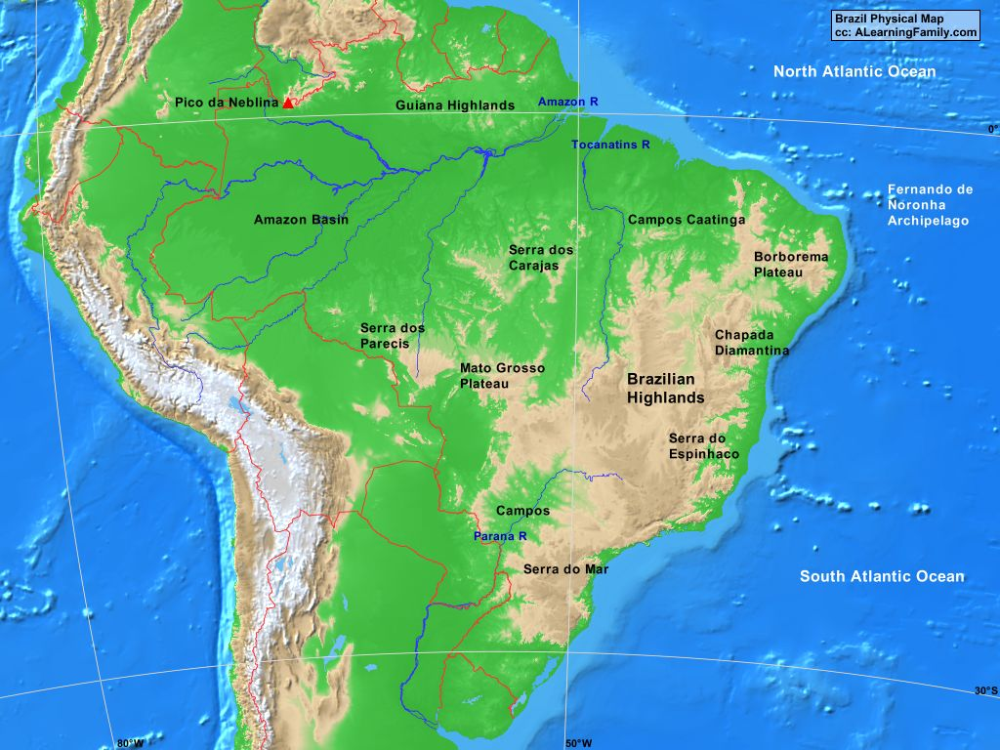
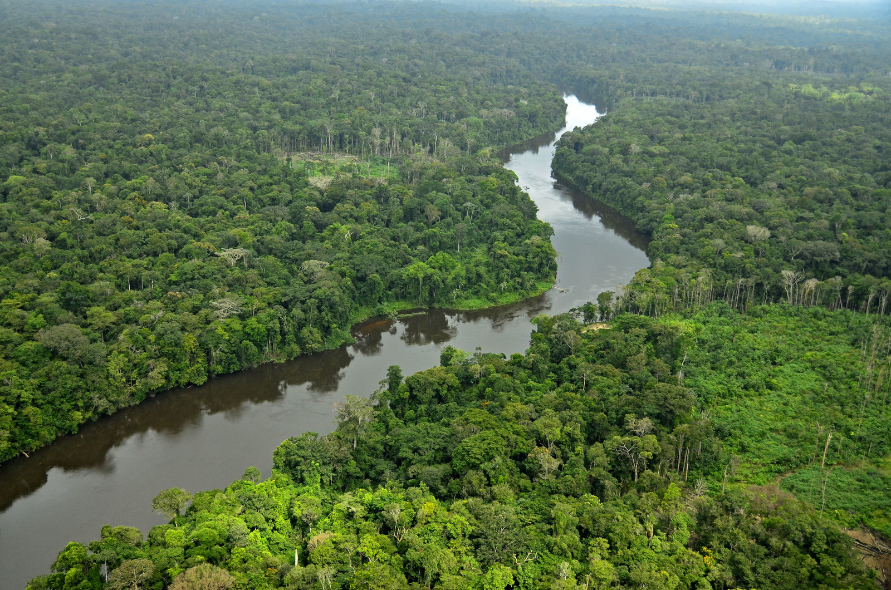
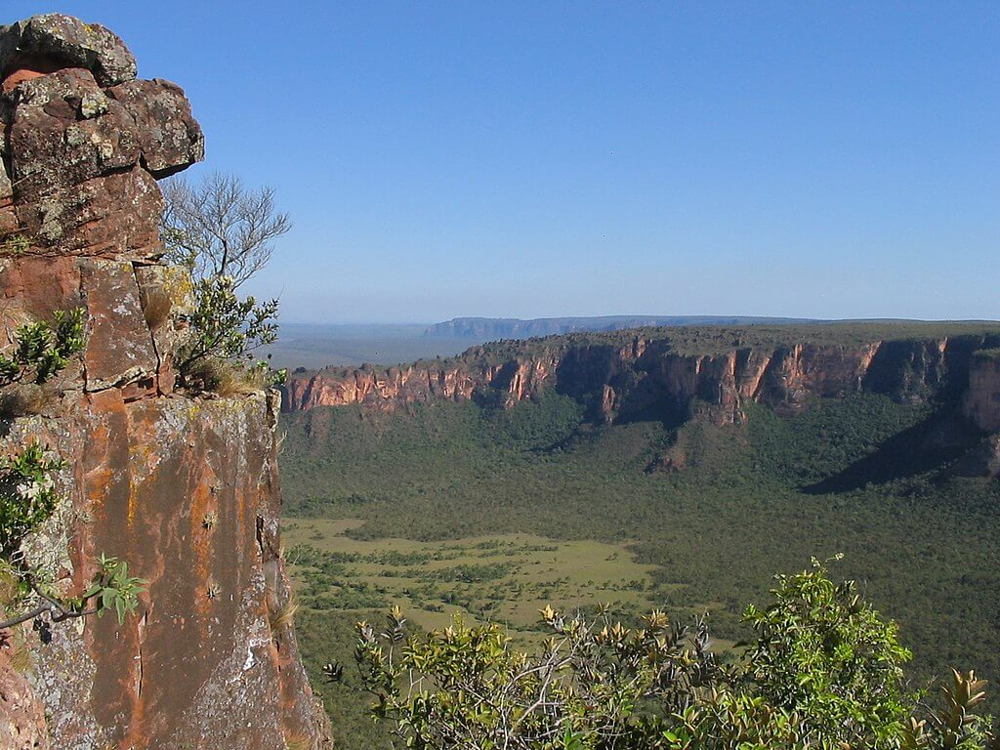

Geography
While primarily known for hosting the ever-famous Amazon River and rainforest that dominates the north of the country, Brazil can still boast an extremely varied geography. In addition to the dense jungles that surround the iconic river, the country is home to large highlands across the southernmost half the country, and coastal lowlands bordering the Atlantic Ocean. Most of the population call the latter two regions home. Costal cities support trade, while most mineable mineral deposits can be found within the highlands. Due to the density of the Amazon Rainforest, very few of Brazil’s citizens live there.
Amazon
The famous Amazon rainforest and the river that flows through it takes up the majority of northwestern Brazil. It’s the world’s largest rainforest, and spans over 9 different countries. Additionally, the Amazon River is the largest in the world, as measured by the average amount of water that flows through it in a given time. As for length, the river comes in at a close second to the Nile- the Amazon is 6,400 kilometers long, whereas the Nile is 6650. While most of the population lives in the highlands or along the coast, the Amazon area still has many residents. Many indigenous tribes, such as the Wajapi, call this dense rainforest their home.
Highlands
Home to much of the population, along with an abundance of mineral resources, the Brazilian highlands dominate the southeastern region of the country. One of the landmarks of this region is the Pico da Bandeira, measuring in at 2,891 meters tall. A large majority of these highlands are plateaus- they are elevated landmasses with flat tops. These impressive natural structures bring the region’s average height to roughly one thousand meters above the sea level.
Coastal Region
Brazil’s coastal region measures nearly 7,500 meters long. The country has 26 states, with 17 of them claiming a portion of the country’s coastline. The terrain along the Atlantic ocean is also incredibly varied; sheer cliffs from the highland regions border the ocean, while the outlet of the amazon river allows for a much flatter region just barely above the sea level. Most of the country’s population lives among the coast- many of the early cities set up here, to take advantage of the easy trade networks the Atlantic brought.